11. Ensembles#
Author:
import numpy as np
import matplotlib.pyplot as plt
import bayesflow as bf
import keras
INFO:2026-02-27 21:31:10,372:jax._src.xla_bridge:834: Unable to initialize backend 'tpu': INTERNAL: Failed to open libtpu.so: libtpu.so: cannot open shared object file: No such file or directory
INFO:jax._src.xla_bridge:Unable to initialize backend 'tpu': INTERNAL: Failed to open libtpu.so: libtpu.so: cannot open shared object file: No such file or directory
INFO:bayesflow:Using backend 'jax'
/home/space/Projects/bayesflow/.venv/lib/python3.13/site-packages/tqdm/auto.py:21: TqdmWarning: IProgress not found. Please update jupyter and ipywidgets. See https://ipywidgets.readthedocs.io/en/stable/user_install.html
from .autonotebook import tqdm as notebook_tqdm
11.1. Simulator and Adapter#
As a quick demo, we use the widely overused Lotka-Volterra simulator.
simulator = bf.simulators.LotkaVolterra(flatten=False)
adapter = (
bf.Adapter()
.to_array()
.convert_dtype("float32", "float64")
.rename("observables", "summary_variables")
.rename("parameters", "inference_variables")
)
11.2. Ensemble Creation and Training#
We have multiple ways of creating and training ensembles. Below, we first demonstrate the lower-level interface that simply represents a trainable container of approximators.
11.2.1. EnsembleApproximator#
The EnsembleApproximator is constructed with a dictionary where each value is either a ContinuousApproximator or a ScoringRuleApproximator. Noticably, do not need to be trained yet untrained.
Furthermore, we can pass references to the same network repeatedly to different approximators’ constructor arguments, so weights can be shared effortlessly.
# We can either use separate or shared summary networks
# In this case, we define a single, thus shared, summary network and initialize separate inference networks.
# Note: This means that the summary network's gradients are the sum over all forward passes with the different inference networks.
# Since the gradients will not be aligned this will not really be an effective learning rate increase by factor 3,
# but still it will likely update faster than when training one with a single inference network.
summary_network = bf.networks.TimeSeriesNetwork(kernel_sizes=2, recurrent_dim=32, skip_steps=1)
approximator = bf.approximators.EnsembleApproximator({
"nf": bf.ContinuousApproximator(
adapter=adapter,
inference_network=bf.networks.CouplingFlow(),
summary_network=summary_network,
),
"cm": bf.ContinuousApproximator(
adapter=adapter,
inference_network=bf.networks.StableConsistencyModel(),
summary_network=summary_network,
),
"mvn": bf.ScoringRuleApproximator(
adapter=adapter,
inference_network=bf.networks.ScoringRuleNetwork(
scoring_rules=dict(mvn=bf.scoring_rules.MvNormalScore())
),
summary_network=summary_network,
),
})
WARNING:bayesflow:EnsembleApproximator contains shared component 'summary_network' across members ['nf', 'cm', 'mvn']. Deserialization of weights of shared components is not supported yet and may fail. Use separate component instances (e.g., clone networks) to be able to serialize the whole EnsembleApproximator object or serialize the approximators in the ensemble separately.
dataset = bf.OnlineDataset(simulator=simulator, adapter=adapter, batch_size=32, num_batches=10)
dataset = bf.EnsembleDataset(dataset, member_names=approximator.members, data_reuse=0.5)
approximator.compile(optimizer="adam")
history = approximator.fit(dataset=dataset, epochs=2)
INFO:bayesflow:EnsembleOnlineDataset: ensemble_size=3, batch_size=32, data_reuse=0.5 -> reduction_factor=0.5, pool_size=64 (≈2.0*batch_size).
Overlap is enforced per training step by splitting a pooled simulated batch into member windows.
INFO:bayesflow:Fitting on dataset instance of EnsembleDataset.
INFO:bayesflow:Building on a test batch.
Epoch 1/2
10/10 ━━━━━━━━━━━━━━━━━━━━ 16s 50ms/step - cm/loss: -0.5284 - loss: 9.1231 - mvn/loss: 4.7252 - mvn/mvn/inference_mvn: 4.7252 - nf/loss: 4.9263
Epoch 2/2
10/10 ━━━━━━━━━━━━━━━━━━━━ 0s 39ms/step - cm/loss: -0.5168 - loss: 8.6582 - mvn/loss: 4.1067 - mvn/mvn/inference_mvn: 4.1067 - nf/loss: 5.0683
11.2.2. EnsembleWorkflow#
Just as the BasicWorkflow serves as a convenient high-level interface with sensible defaults for ScoringRuleApproximator and ContinuousApproximator, the EnsembleWorkflow makes it even simpler to instantiate and work with EnsembleApproximators.
workflow = bf.EnsembleWorkflow(
inference_networks=bf.networks.ScoringRuleNetwork(scoring_rules=dict(mean=bf.scoring_rules.MeanScore())),
ensemble_size=3,
summary_networks=bf.networks.TimeSeriesNetwork(kernel_sizes=2, recurrent_dim=32, skip_steps=1),
simulator=simulator,
adapter=adapter
)
history = workflow.fit_online(epochs=2, batch_size=32, num_batches_per_epoch=10, data_reuse=0.5)
WARNING:bayesflow:EnsembleApproximator contains shared component 'summary_network' across members ['0', '1', '2']. Deserialization of weights of shared components is not supported yet and may fail. Use separate component instances (e.g., clone networks) to be able to serialize the whole EnsembleApproximator object or serialize the approximators in the ensemble separately.
INFO:bayesflow:EnsembleOnlineDataset: ensemble_size=3, batch_size=32, data_reuse=0.5 -> reduction_factor=0.5, pool_size=64 (≈2.0*batch_size).
Overlap is enforced per training step by splitting a pooled simulated batch into member windows.
INFO:bayesflow:Fitting on dataset instance of EnsembleDataset.
INFO:bayesflow:Building on a test batch.
Epoch 1/2
10/10 ━━━━━━━━━━━━━━━━━━━━ 6s 39ms/step - 0/loss: 1.3323 - 0/mean/inference_mean: 1.3323 - 1/loss: 1.2245 - 1/mean/inference_mean: 1.2245 - 2/loss: 1.5947 - 2/mean/inference_mean: 1.5947 - loss: 4.1515
Epoch 2/2
10/10 ━━━━━━━━━━━━━━━━━━━━ 1s 42ms/step - 0/loss: 1.1395 - 0/mean/inference_mean: 1.1395 - 1/loss: 1.0668 - 1/mean/inference_mean: 1.0668 - 2/loss: 1.5834 - 2/mean/inference_mean: 1.5834 - loss: 3.7897
INFO:bayesflow:Training completed in 7.58 seconds.
If a single network is passed to the inference_networks keyword argument (as above), each ensemble member still gets an independent clone of the network. If you are sure you want to share the inference networks, you can pass share_inference_network=True.
workflow.approximator.approximators["0"].inference_network == workflow.approximator.approximators["1"].inference_network
False
On the other hand, if we pass a single network to the summary_networks keyword argument, the summary network will be shared between ensemble members.
workflow.approximator.approximators["0"].summary_network == workflow.approximator.approximators["1"].summary_network
True
To check that the learnt posterior is different for each ensemble member, we can estimate the same condition separately. Since estimate for a ScoringRuleNetwork is deterministic for a given condition this is sufficient to show that the approximators are different. Sampling generative approximators would not be.
from pprint import pprint
pprint(workflow.estimate(conditions=simulator.sample(1), groupby="variable"))
INFO:bayesflow:Estimating completed in 2.46 seconds.
{'parameters': {'mean': {'0': array([[1.1417912 , 0.02183776, 0.8654297 , 0.064208 ]], dtype=float32),
'1': array([[1.7352594 , 0.03299244, 0.2355746 , 0.05657743]], dtype=float32),
'2': array([[1.4353998 , 0.06394689, 0.6043464 , 0.04782377]], dtype=float32)}}}
Now let us use different architectures for the inference networks. Three generative approximators and one point estimation approximator will be trained at the same time and share an inference network.
Moreover, we will train on a presimulated dataset, so training will be extremely fast.
train_sims = simulator.sample(10000)
val_sims = simulator.sample(200)
workflow = bf.EnsembleWorkflow(
inference_networks={
"nf": "coupling_flow",
"fm": "flow_matching",
"mvn": bf.networks.ScoringRuleNetwork(scoring_rules=dict(mvn=bf.scoring_rules.MvNormalScore())),
"point": bf.networks.ScoringRuleNetwork(scoring_rules=dict(mean=bf.scoring_rules.MeanScore())),
},
summary_networks=bf.networks.TimeSeriesNetwork(kernel_sizes=2, recurrent_dim=32, skip_steps=1),
simulator=simulator,
adapter=adapter
)
history = workflow.fit_offline(epochs=30, data=train_sims, validation_data=val_sims)
WARNING:bayesflow:EnsembleApproximator contains shared component 'summary_network' across members ['nf', 'fm', 'mvn', 'point']. Deserialization of weights of shared components is not supported yet and may fail. Use separate component instances (e.g., clone networks) to be able to serialize the whole EnsembleApproximator object or serialize the approximators in the ensemble separately.
INFO:bayesflow:EnsembleIndexedDataset: ensemble_size=4, batch_size=32, num_samples=10000, data_reuse=1.0 -> reduction_factor=1.00, window_size=10000, steps_per_epoch=313. Overlap is enforced at the subdataset level (member-specific windows into the global index pool).
INFO:bayesflow:Fitting on dataset instance of EnsembleDataset.
INFO:bayesflow:Building on a test batch.
Epoch 1/30
313/313 ━━━━━━━━━━━━━━━━━━━━ 40s 84ms/step - fm/loss: 1.4180 - loss: 9.8347 - mvn/loss: 4.2006 - mvn/mvn/inference_mvn: 4.2006 - nf/loss: 3.5571 - point/loss: 0.6591 - point/mean/inference_mean: 0.6591 - val_fm/loss: 0.7607 - val_loss: 7.0113 - val_mvn/loss: 3.1376 - val_mvn/mvn/inference_mvn: 3.1376 - val_nf/loss: 2.8424 - val_point/loss: 0.2706 - val_point/mean/inference_mean: 0.2706
Epoch 2/30
313/313 ━━━━━━━━━━━━━━━━━━━━ 3s 8ms/step - fm/loss: 1.8549 - loss: 9.7546 - mvn/loss: 4.3944 - mvn/mvn/inference_mvn: 4.3944 - nf/loss: 2.5382 - point/loss: 0.9671 - point/mean/inference_mean: 0.9671 - val_fm/loss: 1.0970 - val_loss: 4.8089 - val_mvn/loss: 1.8103 - val_mvn/mvn/inference_mvn: 1.8103 - val_nf/loss: 1.6303 - val_point/loss: 0.2713 - val_point/mean/inference_mean: 0.2713
Epoch 3/30
313/313 ━━━━━━━━━━━━━━━━━━━━ 3s 8ms/step - fm/loss: 0.5462 - loss: 2.3241 - mvn/loss: 1.2360 - mvn/mvn/inference_mvn: 1.2360 - nf/loss: 0.2723 - point/loss: 0.2695 - point/mean/inference_mean: 0.2695 - val_fm/loss: 0.3084 - val_loss: -0.9321 - val_mvn/loss: -0.3310 - val_mvn/mvn/inference_mvn: -0.3310 - val_nf/loss: -0.9987 - val_point/loss: 0.0892 - val_point/mean/inference_mean: 0.0892
Epoch 4/30
313/313 ━━━━━━━━━━━━━━━━━━━━ 3s 8ms/step - fm/loss: 0.3809 - loss: -1.1211 - mvn/loss: -0.0308 - mvn/mvn/inference_mvn: -0.0308 - nf/loss: -1.5938 - point/loss: 0.1225 - point/mean/inference_mean: 0.1225 - val_fm/loss: 0.3754 - val_loss: -1.8609 - val_mvn/loss: -0.9092 - val_mvn/mvn/inference_mvn: -0.9092 - val_nf/loss: -1.3811 - val_point/loss: 0.0540 - val_point/mean/inference_mean: 0.0540
Epoch 5/30
313/313 ━━━━━━━━━━━━━━━━━━━━ 3s 8ms/step - fm/loss: 0.7331 - loss: -1.1448 - mvn/loss: -0.6414 - mvn/mvn/inference_mvn: -0.6414 - nf/loss: -1.6589 - point/loss: 0.4224 - point/mean/inference_mean: 0.4224 - val_fm/loss: 0.9727 - val_loss: -0.5935 - val_mvn/loss: -0.3217 - val_mvn/mvn/inference_mvn: -0.3217 - val_nf/loss: -1.5062 - val_point/loss: 0.2617 - val_point/mean/inference_mean: 0.2617
Epoch 6/30
313/313 ━━━━━━━━━━━━━━━━━━━━ 3s 8ms/step - fm/loss: 0.4549 - loss: -1.8751 - mvn/loss: -0.5641 - mvn/mvn/inference_mvn: -0.5641 - nf/loss: -1.9123 - point/loss: 0.1465 - point/mean/inference_mean: 0.1465 - val_fm/loss: 0.4530 - val_loss: -1.0700 - val_mvn/loss: -0.5939 - val_mvn/mvn/inference_mvn: -0.5939 - val_nf/loss: -1.1186 - val_point/loss: 0.1894 - val_point/mean/inference_mean: 0.1894
Epoch 7/30
313/313 ━━━━━━━━━━━━━━━━━━━━ 3s 8ms/step - fm/loss: 0.3170 - loss: -2.6725 - mvn/loss: -1.1492 - mvn/mvn/inference_mvn: -1.1492 - nf/loss: -1.9019 - point/loss: 0.0616 - point/mean/inference_mean: 0.0616 - val_fm/loss: 0.0976 - val_loss: -4.2327 - val_mvn/loss: -1.9557 - val_mvn/mvn/inference_mvn: -1.9557 - val_nf/loss: -2.4534 - val_point/loss: 0.0788 - val_point/mean/inference_mean: 0.0788
Epoch 8/30
313/313 ━━━━━━━━━━━━━━━━━━━━ 3s 8ms/step - fm/loss: 0.5389 - loss: -3.2932 - mvn/loss: -1.3921 - mvn/mvn/inference_mvn: -1.3921 - nf/loss: -2.5055 - point/loss: 0.0656 - point/mean/inference_mean: 0.0656 - val_fm/loss: 0.5263 - val_loss: -3.4317 - val_mvn/loss: -1.5829 - val_mvn/mvn/inference_mvn: -1.5829 - val_nf/loss: -2.4285 - val_point/loss: 0.0534 - val_point/mean/inference_mean: 0.0534
Epoch 9/30
313/313 ━━━━━━━━━━━━━━━━━━━━ 3s 8ms/step - fm/loss: 0.4498 - loss: -1.5650 - mvn/loss: -0.6243 - mvn/mvn/inference_mvn: -0.6243 - nf/loss: -1.5527 - point/loss: 0.1622 - point/mean/inference_mean: 0.1622 - val_fm/loss: 0.4488 - val_loss: -2.8916 - val_mvn/loss: -1.6185 - val_mvn/mvn/inference_mvn: -1.6185 - val_nf/loss: -1.9184 - val_point/loss: 0.1966 - val_point/mean/inference_mean: 0.1966
Epoch 10/30
313/313 ━━━━━━━━━━━━━━━━━━━━ 3s 8ms/step - fm/loss: 0.5641 - loss: -3.4484 - mvn/loss: -1.8679 - mvn/mvn/inference_mvn: -1.8679 - nf/loss: -2.2429 - point/loss: 0.0983 - point/mean/inference_mean: 0.0983 - val_fm/loss: 0.1074 - val_loss: -6.8887 - val_mvn/loss: -3.4628 - val_mvn/mvn/inference_mvn: -3.4628 - val_nf/loss: -3.5489 - val_point/loss: 0.0156 - val_point/mean/inference_mean: 0.0156
Epoch 11/30
313/313 ━━━━━━━━━━━━━━━━━━━━ 3s 8ms/step - fm/loss: 0.3386 - loss: -2.7770 - mvn/loss: -0.6922 - mvn/mvn/inference_mvn: -0.6922 - nf/loss: -2.4838 - point/loss: 0.0605 - point/mean/inference_mean: 0.0605 - val_fm/loss: 0.3748 - val_loss: -3.9047 - val_mvn/loss: -1.9091 - val_mvn/mvn/inference_mvn: -1.9091 - val_nf/loss: -2.4956 - val_point/loss: 0.1252 - val_point/mean/inference_mean: 0.1252
Epoch 12/30
313/313 ━━━━━━━━━━━━━━━━━━━━ 3s 8ms/step - fm/loss: 0.3221 - loss: -5.0538 - mvn/loss: -2.2640 - mvn/mvn/inference_mvn: -2.2640 - nf/loss: -3.1893 - point/loss: 0.0774 - point/mean/inference_mean: 0.0774 - val_fm/loss: 0.2082 - val_loss: -6.1261 - val_mvn/loss: -2.8945 - val_mvn/mvn/inference_mvn: -2.8945 - val_nf/loss: -3.4723 - val_point/loss: 0.0325 - val_point/mean/inference_mean: 0.0325
Epoch 13/30
313/313 ━━━━━━━━━━━━━━━━━━━━ 3s 8ms/step - fm/loss: 0.6300 - loss: -2.6784 - mvn/loss: -1.5390 - mvn/mvn/inference_mvn: -1.5390 - nf/loss: -1.9750 - point/loss: 0.2056 - point/mean/inference_mean: 0.2056 - val_fm/loss: 0.1888 - val_loss: -5.2860 - val_mvn/loss: -2.4779 - val_mvn/mvn/inference_mvn: -2.4779 - val_nf/loss: -3.0502 - val_point/loss: 0.0534 - val_point/mean/inference_mean: 0.0534
Epoch 14/30
313/313 ━━━━━━━━━━━━━━━━━━━━ 3s 8ms/step - fm/loss: 0.4036 - loss: -4.6774 - mvn/loss: -2.2985 - mvn/mvn/inference_mvn: -2.2985 - nf/loss: -2.8878 - point/loss: 0.1053 - point/mean/inference_mean: 0.1053 - val_fm/loss: 0.2175 - val_loss: -5.6910 - val_mvn/loss: -2.7957 - val_mvn/mvn/inference_mvn: -2.7957 - val_nf/loss: -3.1423 - val_point/loss: 0.0295 - val_point/mean/inference_mean: 0.0295
Epoch 15/30
313/313 ━━━━━━━━━━━━━━━━━━━━ 3s 8ms/step - fm/loss: 0.3476 - loss: -5.1245 - mvn/loss: -2.3843 - mvn/mvn/inference_mvn: -2.3843 - nf/loss: -3.1373 - point/loss: 0.0494 - point/mean/inference_mean: 0.0494 - val_fm/loss: 0.4092 - val_loss: -3.2641 - val_mvn/loss: -1.6135 - val_mvn/mvn/inference_mvn: -1.6135 - val_nf/loss: -2.2540 - val_point/loss: 0.1943 - val_point/mean/inference_mean: 0.1943
Epoch 16/30
313/313 ━━━━━━━━━━━━━━━━━━━━ 3s 8ms/step - fm/loss: 0.3765 - loss: -3.9331 - mvn/loss: -2.1722 - mvn/mvn/inference_mvn: -2.1722 - nf/loss: -2.2216 - point/loss: 0.0843 - point/mean/inference_mean: 0.0843 - val_fm/loss: 0.4591 - val_loss: -0.8823 - val_mvn/loss: -0.5192 - val_mvn/mvn/inference_mvn: -0.5192 - val_nf/loss: -1.0637 - val_point/loss: 0.2415 - val_point/mean/inference_mean: 0.2415
Epoch 17/30
313/313 ━━━━━━━━━━━━━━━━━━━━ 3s 8ms/step - fm/loss: 0.3312 - loss: -4.8639 - mvn/loss: -2.2950 - mvn/mvn/inference_mvn: -2.2950 - nf/loss: -2.9665 - point/loss: 0.0664 - point/mean/inference_mean: 0.0664 - val_fm/loss: 0.3765 - val_loss: -8.8381 - val_mvn/loss: -4.3062 - val_mvn/mvn/inference_mvn: -4.3062 - val_nf/loss: -4.9251 - val_point/loss: 0.0168 - val_point/mean/inference_mean: 0.0168
Epoch 18/30
313/313 ━━━━━━━━━━━━━━━━━━━━ 3s 8ms/step - fm/loss: 0.3601 - loss: -5.1956 - mvn/loss: -2.6567 - mvn/mvn/inference_mvn: -2.6567 - nf/loss: -2.9934 - point/loss: 0.0944 - point/mean/inference_mean: 0.0944 - val_fm/loss: 0.1093 - val_loss: -7.5079 - val_mvn/loss: -3.6244 - val_mvn/mvn/inference_mvn: -3.6244 - val_nf/loss: -4.0127 - val_point/loss: 0.0199 - val_point/mean/inference_mean: 0.0199
Epoch 19/30
313/313 ━━━━━━━━━━━━━━━━━━━━ 3s 8ms/step - fm/loss: 0.1921 - loss: -6.1381 - mvn/loss: -2.8537 - mvn/mvn/inference_mvn: -2.8537 - nf/loss: -3.5329 - point/loss: 0.0565 - point/mean/inference_mean: 0.0565 - val_fm/loss: 0.0510 - val_loss: -7.9574 - val_mvn/loss: -3.8499 - val_mvn/mvn/inference_mvn: -3.8499 - val_nf/loss: -4.1839 - val_point/loss: 0.0253 - val_point/mean/inference_mean: 0.0253
Epoch 20/30
313/313 ━━━━━━━━━━━━━━━━━━━━ 3s 8ms/step - fm/loss: 0.4532 - loss: -6.3507 - mvn/loss: -2.9588 - mvn/mvn/inference_mvn: -2.9588 - nf/loss: -3.9153 - point/loss: 0.0703 - point/mean/inference_mean: 0.0703 - val_fm/loss: 0.2921 - val_loss: -7.0346 - val_mvn/loss: -3.5370 - val_mvn/mvn/inference_mvn: -3.5370 - val_nf/loss: -3.8212 - val_point/loss: 0.0315 - val_point/mean/inference_mean: 0.0315
Epoch 21/30
313/313 ━━━━━━━━━━━━━━━━━━━━ 3s 8ms/step - fm/loss: 0.3752 - loss: -5.8594 - mvn/loss: -2.7985 - mvn/mvn/inference_mvn: -2.7985 - nf/loss: -3.5263 - point/loss: 0.0903 - point/mean/inference_mean: 0.0903 - val_fm/loss: 0.1523 - val_loss: -5.3888 - val_mvn/loss: -2.8008 - val_mvn/mvn/inference_mvn: -2.8008 - val_nf/loss: -2.7765 - val_point/loss: 0.0363 - val_point/mean/inference_mean: 0.0363
Epoch 22/30
313/313 ━━━━━━━━━━━━━━━━━━━━ 3s 8ms/step - fm/loss: 0.3541 - loss: -5.8034 - mvn/loss: -3.0911 - mvn/mvn/inference_mvn: -3.0911 - nf/loss: -3.1431 - point/loss: 0.0768 - point/mean/inference_mean: 0.0768 - val_fm/loss: 0.1118 - val_loss: -7.4823 - val_mvn/loss: -3.6750 - val_mvn/mvn/inference_mvn: -3.6750 - val_nf/loss: -3.9444 - val_point/loss: 0.0253 - val_point/mean/inference_mean: 0.0253
Epoch 23/30
313/313 ━━━━━━━━━━━━━━━━━━━━ 3s 8ms/step - fm/loss: 0.2674 - loss: -6.3379 - mvn/loss: -2.9081 - mvn/mvn/inference_mvn: -2.9081 - nf/loss: -3.7599 - point/loss: 0.0627 - point/mean/inference_mean: 0.0627 - val_fm/loss: 0.3873 - val_loss: -7.5398 - val_mvn/loss: -3.8060 - val_mvn/mvn/inference_mvn: -3.8060 - val_nf/loss: -4.1529 - val_point/loss: 0.0318 - val_point/mean/inference_mean: 0.0318
Epoch 24/30
313/313 ━━━━━━━━━━━━━━━━━━━━ 3s 8ms/step - fm/loss: 0.4311 - loss: -5.0584 - mvn/loss: -2.4815 - mvn/mvn/inference_mvn: -2.4815 - nf/loss: -3.1119 - point/loss: 0.1039 - point/mean/inference_mean: 0.1039 - val_fm/loss: 0.0783 - val_loss: -8.6747 - val_mvn/loss: -4.1695 - val_mvn/mvn/inference_mvn: -4.1695 - val_nf/loss: -4.6094 - val_point/loss: 0.0259 - val_point/mean/inference_mean: 0.0259
Epoch 25/30
313/313 ━━━━━━━━━━━━━━━━━━━━ 3s 8ms/step - fm/loss: 0.2774 - loss: -6.9022 - mvn/loss: -3.2153 - mvn/mvn/inference_mvn: -3.2153 - nf/loss: -3.9978 - point/loss: 0.0336 - point/mean/inference_mean: 0.0336 - val_fm/loss: 0.5700 - val_loss: -5.8901 - val_mvn/loss: -3.0932 - val_mvn/mvn/inference_mvn: -3.0932 - val_nf/loss: -3.4830 - val_point/loss: 0.1160 - val_point/mean/inference_mean: 0.1160
Epoch 26/30
313/313 ━━━━━━━━━━━━━━━━━━━━ 3s 8ms/step - fm/loss: 0.4732 - loss: -4.2625 - mvn/loss: -1.8766 - mvn/mvn/inference_mvn: -1.8766 - nf/loss: -2.9376 - point/loss: 0.0784 - point/mean/inference_mean: 0.0784 - val_fm/loss: 0.2679 - val_loss: -7.8955 - val_mvn/loss: -3.7245 - val_mvn/mvn/inference_mvn: -3.7245 - val_nf/loss: -4.4763 - val_point/loss: 0.0373 - val_point/mean/inference_mean: 0.0373
Epoch 27/30
313/313 ━━━━━━━━━━━━━━━━━━━━ 3s 8ms/step - fm/loss: 0.2013 - loss: -7.6353 - mvn/loss: -3.6664 - mvn/mvn/inference_mvn: -3.6664 - nf/loss: -4.1972 - point/loss: 0.0270 - point/mean/inference_mean: 0.0270 - val_fm/loss: 0.2925 - val_loss: -9.5972 - val_mvn/loss: -4.8327 - val_mvn/mvn/inference_mvn: -4.8327 - val_nf/loss: -5.0703 - val_point/loss: 0.0133 - val_point/mean/inference_mean: 0.0133
Epoch 28/30
313/313 ━━━━━━━━━━━━━━━━━━━━ 3s 8ms/step - fm/loss: 0.2412 - loss: -6.6446 - mvn/loss: -3.1984 - mvn/mvn/inference_mvn: -3.1984 - nf/loss: -3.7397 - point/loss: 0.0524 - point/mean/inference_mean: 0.0524 - val_fm/loss: 0.3273 - val_loss: -11.1583 - val_mvn/loss: -5.3115 - val_mvn/mvn/inference_mvn: -5.3115 - val_nf/loss: -6.1835 - val_point/loss: 0.0093 - val_point/mean/inference_mean: 0.0093
Epoch 29/30
313/313 ━━━━━━━━━━━━━━━━━━━━ 3s 8ms/step - fm/loss: 0.2034 - loss: -7.4211 - mvn/loss: -3.6215 - mvn/mvn/inference_mvn: -3.6215 - nf/loss: -4.0506 - point/loss: 0.0475 - point/mean/inference_mean: 0.0475 - val_fm/loss: 0.3706 - val_loss: -7.2526 - val_mvn/loss: -3.6060 - val_mvn/mvn/inference_mvn: -3.6060 - val_nf/loss: -4.0445 - val_point/loss: 0.0273 - val_point/mean/inference_mean: 0.0273
Epoch 30/30
313/313 ━━━━━━━━━━━━━━━━━━━━ 3s 8ms/step - fm/loss: 0.2971 - loss: -3.7002 - mvn/loss: -1.5355 - mvn/mvn/inference_mvn: -1.5355 - nf/loss: -2.7855 - point/loss: 0.3237 - point/mean/inference_mean: 0.3237 - val_fm/loss: 0.1829 - val_loss: -8.5812 - val_mvn/loss: -3.9827 - val_mvn/mvn/inference_mvn: -3.9827 - val_nf/loss: -4.8583 - val_point/loss: 0.0770 - val_point/mean/inference_mean: 0.0770
INFO:bayesflow:Training completed in 1.95 minutes.
samples = workflow.sample(conditions=simulator.sample(2), num_samples=100, merge_members=False)
pprint(keras.tree.map_structure(keras.ops.shape, samples))
Sampling: 100%|██████████| 1/1 [00:02<00:00, 2.60s/batch]
Sampling: 100%|██████████| 1/1 [00:04<00:00, 4.47s/batch]
Sampling: 100%|██████████| 1/1 [00:01<00:00, 1.64s/batch]
INFO:bayesflow:Sampling completed in 8.82 seconds.
{'fm': {'parameters': (2, 100, 4)},
'mvn': {'parameters': (2, 100, 4)},
'nf': {'parameters': (2, 100, 4)}}
samples = workflow.sample(conditions=simulator.sample(2), num_samples=100, member_weights=dict(nf=1, mvn=3, fm=1))
pprint(keras.tree.map_structure(keras.ops.shape, samples))
Sampling: 100%|██████████| 1/1 [00:01<00:00, 1.56s/batch]
Sampling: 100%|██████████| 1/1 [00:00<00:00, 1.56batch/s]
Sampling: 100%|██████████| 1/1 [00:04<00:00, 4.34s/batch]
INFO:bayesflow:Sampling completed in 6.69 seconds.
{'parameters': (2, 100, 4)}
estimates = workflow.estimate(conditions=simulator.sample(2), groupby="variable")
pprint(keras.tree.map_structure(keras.ops.shape, estimates))
Sampling: 100%|██████████| 1/1 [00:01<00:00, 1.53s/batch]
Sampling: 100%|██████████| 1/1 [00:04<00:00, 4.94s/batch]
WARNING:bayesflow:Estimate 'mvn.precision_cholesky_factor' is marked to not transform like a vector. It was treated like a vector by the adapter. Handle 'precision_cholesky_factor' estimates with care.
INFO:bayesflow:Estimating completed in 7.42 seconds.
{'parameters': {'mean': {'fm': (2, 1, 4), 'nf': (2, 1, 4), 'point': (2, 4)},
'median': {'fm': (2, 1, 4), 'nf': (2, 1, 4)},
'mvn': {'mean': {'mvn': (2, 4)},
'precision_cholesky_factor': {'mvn': (2, 4, 4)}},
'quantiles': {'fm': (2, 3, 4), 'nf': (2, 3, 4)}}}
log_prob = workflow.log_prob(data=simulator.sample(2), merge_members=False)
pprint(keras.tree.map_structure(keras.ops.shape, log_prob))
INFO:bayesflow:Computing log probability completed in 14.41 seconds.
{'fm': (2,), 'mvn': (2,), 'nf': (2,)}
11.2.3. Default diagnostics for the whole ensemble#
workflow.plot_default_diagnostics(simulator.sample(100))
Sampling: 100%|██████████| 1/1 [00:02<00:00, 2.71s/batch]
Sampling: 100%|██████████| 1/1 [00:04<00:00, 4.87s/batch]
Sampling: 100%|██████████| 1/1 [00:02<00:00, 2.03s/batch]
{'losses': <Figure size 1600x400 with 1 Axes>,
'recovery': <Figure size 2000x500 with 4 Axes>,
'calibration_ecdf': <Figure size 2000x500 with 4 Axes>,
'coverage': <Figure size 2000x500 with 4 Axes>,
'z_score_contraction': <Figure size 2000x500 with 4 Axes>}
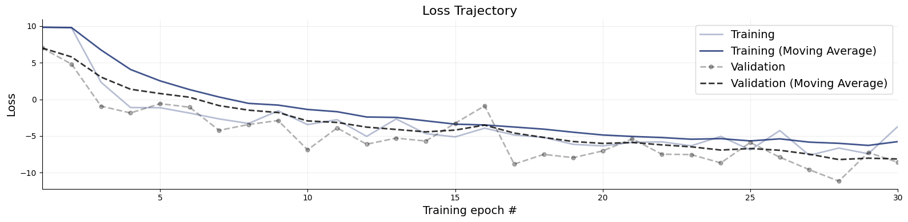
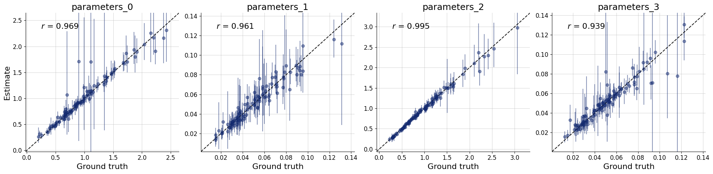
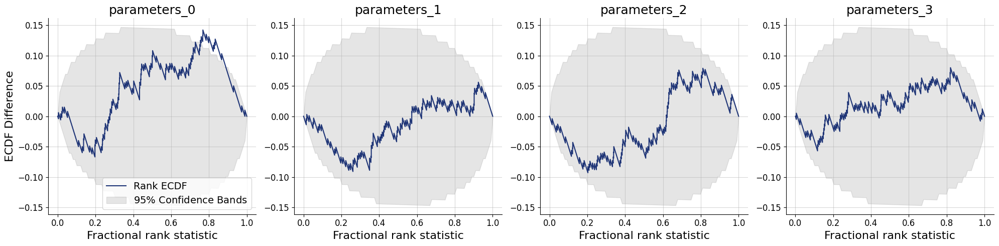
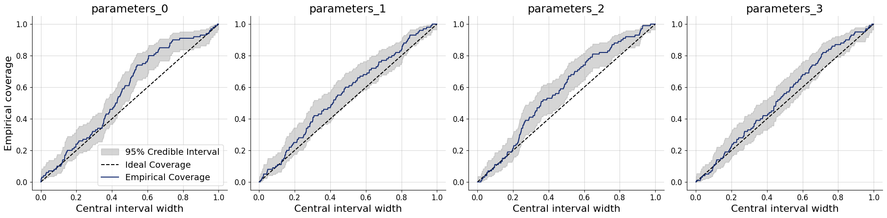
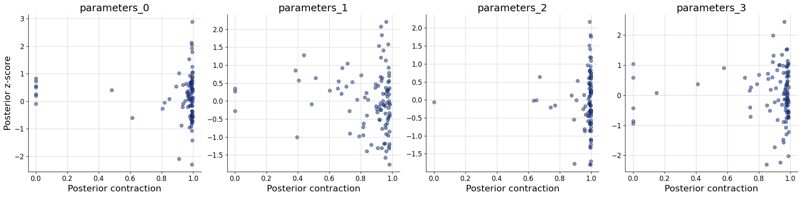
num_samples = 500
# Obtain posterior draws from all ensemble members (using the optional keyword arg member_weights).
marginal_draws = workflow.sample(conditions=val_sims, num_samples=num_samples, member_weights=dict(nf=0.9, fm=0.01, mvn=0.09))
# post_draws is a dictionary of draws with one element per named parameters
keras.tree.map_structure(keras.ops.shape, marginal_draws)
Sampling: 100%|██████████| 1/1 [00:03<00:00, 3.15s/batch]
Sampling: 100%|██████████| 1/1 [00:04<00:00, 4.55s/batch]
Sampling: 100%|██████████| 1/1 [00:01<00:00, 1.30s/batch]
INFO:bayesflow:Sampling completed in 9.21 seconds.
{'parameters': (200, 500, 4)}
# Obtain posterior draws separately for each ensemble member.
post_draws = workflow.sample(conditions=val_sims, num_samples=num_samples, merge_members=False)
# post_draws is a dictionary of draws with one element per named parameters
keras.tree.map_structure(keras.ops.shape, post_draws)
Sampling: 100%|██████████| 1/1 [00:01<00:00, 1.89s/batch]
Sampling: 100%|██████████| 1/1 [00:06<00:00, 6.47s/batch]
Sampling: 100%|██████████| 1/1 [00:00<00:00, 1.34batch/s]
INFO:bayesflow:Sampling completed in 9.18 seconds.
{'nf': {'parameters': (200, 500, 4)},
'fm': {'parameters': (200, 500, 4)},
'mvn': {'parameters': (200, 500, 4)}}
11.3. Diagnostics per ensemble member#
11.3.1. Recovery per ensemble member#
title_args = dict(y=1.02, size=15)
par_names = [r"$\alpha$", r"$\beta$", r"$\gamma$", r"$\delta$"]
dataset_id = 0
for k,v in post_draws.items():
f = bf.diagnostics.recovery(v, val_sims, variable_names=par_names, figsize=(16, 4))
f.suptitle(f"Recovery - Ensemble Member {k.upper()}", **title_args)
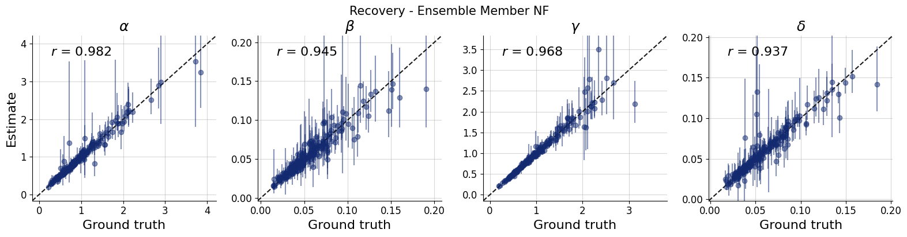
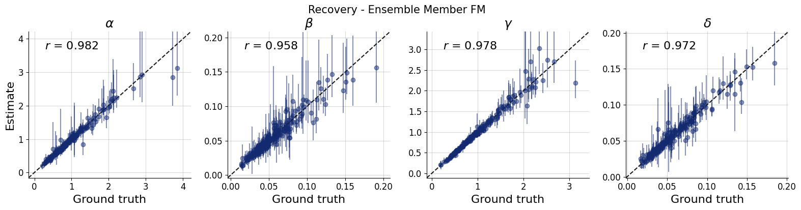
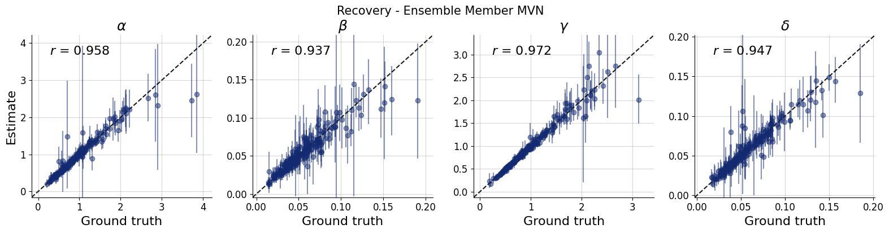
11.3.2. Simulation-Based Calibration per ensemble member#
for k,v in post_draws.items():
f = bf.diagnostics.calibration_ecdf(v, val_sims, variable_names=par_names, difference=True, figsize=(16, 4))
f.suptitle(f"Calibration - Ensemble Member {k.upper()}", **title_args)
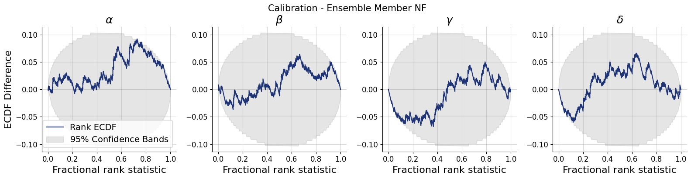
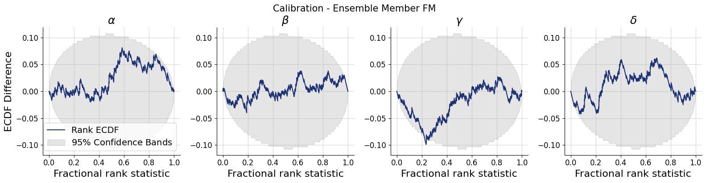
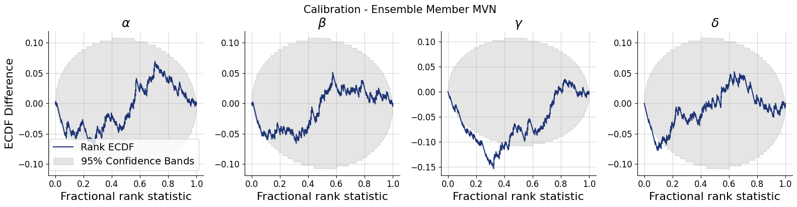
11.4. Posterior Predictive Checks for the Whole Ensemble#
idx = 6
simulator.subsample = None
dataset = val_sims["observables"][idx]
draws_per_dataset = marginal_draws["parameters"][idx]
resims = np.concatenate([simulator.sample(1, parameters=draw)["observables"] for draw in draws_per_dataset])
t_obs = np.linspace(0, simulator.T, dataset.shape[0])
t_sim = np.linspace(0, simulator.T, resims.shape[1])
mean = resims.mean(axis=0)
std = resims.std(axis=0)
fig, ax = plt.subplots(1, 1, figsize=(16, 4))
ax.scatter(t_obs, dataset[:, 0], color="black", label="Observed Prey")
ax.scatter(t_obs, dataset[:, 1], color="maroon", label="Observed Predators", marker="*")
# Prey
ax.plot(t_sim, mean[:, 0], color="gray", alpha=0.9, label="Predicted Prey")
ax.fill_between(t_sim, np.clip(mean[:, 0] - std[:, 0], 0, None), mean[:, 0] + std[:, 0],
color="gray", alpha=0.2, linewidth=0)
# Predators
ax.plot(t_sim, mean[:, 1], color="maroon", alpha=0.9, label="Predicted Predators")
ax.fill_between(t_sim, np.clip(mean[:, 1] - std[:, 1], 0, None), mean[:, 1] + std[:, 1],
color="maroon", alpha=0.2, linewidth=0)
ax.legend()
<matplotlib.legend.Legend at 0x751a70394a50>
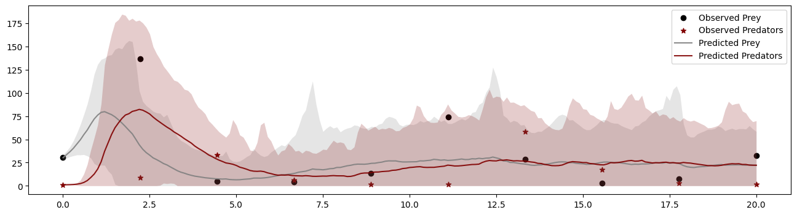